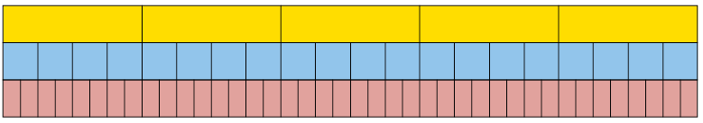
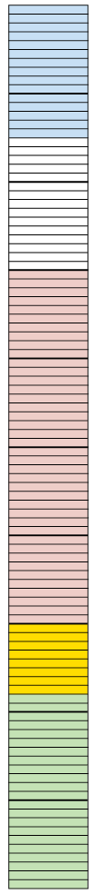

Chapter 3
Fractions
This chapter is mainly revision of the work on fractions that you have done in previous grades. It is being repeated because it is vital that you are confident working with fractions. Ensure that you complete all your solutions to questions without using a calculator, and that you show all steps of your working.
3.1 Equivalent fractions
the same number in different forms
-
How much money is each of the following amounts?
-
\(\frac{\text{1}}{\text{5}}\) of R200
\(\frac{\text{2}}{\text{10}}\) of R200
-
\(\frac{\text{4}}{\text{20}}\) of R200
-
Did you notice that all the answers are the same? That is because\(\frac{\text{1}}{\text{5}}\) , \(\frac{\text{2}}{\text{10}}\) and \(\frac{\text{4}}{\text{20}}\) are equivalent fractions. They are different ways of writing the same number.
Consider this bar. It is divided into five equal parts.
Each piece is one fifth of the whole bar.
Draw lines on the bar below so that it is approximately divided into ten equal parts.

-
What part of the whole bar is each of your ten parts?
-
How many tenths is the same as one fifth?
-
How many tenths is the same as two fifths?
-
How many fifths is the same as eight tenths?
Draw lines on the bar below so that it is approximately divided into 25 equal parts.

-
How many twenty-fifths is the same as two fifths?
-
How many fifths is the same as 20 twenty-fifths?
In question 3(b) you found that \(\frac{\text{4}}{\text{5}}\) is equivalent to \(\frac{\text{20}}{\text{25}}\): these are just two different ways
to describe the same part of the bar.
This can be expressed by writing \(\frac{\text{4}}{\text{5}}\) = \(\frac{\text{20}}{\text{25}}\) which means that \(\frac{\text{4}}{\text{5}}\) and \(\frac{\text{20}}{\text{25}}\) are equivalent to
each other.
Write down all the other pairs of equivalent fractions which you found while doing questions 2 and 3.
The yellow bar is divided into fifths.

-
Into what kind of fraction parts is the blue bar divided?
-
Into what kind of fraction parts is the red bar divided?
-
If you want to mark the yellow bar in twentieths like the blue bar, into how many parts do you have to divide each of the fifths?
-
If you want to mark the yellow bar in fortieths like the red bar, into how many parts do you have to divide each of the fifths?
-
If you want to mark the yellow bar in eightieths, into how many parts do you have to divide each of the fifths?
-
If you want to mark the blue bar in eightieths, into how many parts do you have to divide each of the twentieths?
Suppose this bar is divided into 4 equal parts, in other words, quarters.
-
If the bar is also divided into 20 equal parts, how many of these smaller parts will there be in each quarter?
-
If each quarter is divided into 6 equal parts, what part of the whole bar will each small part be?
Complete this table of equivalent fractions, as far as you can using whole numbers. All the fractions in each column must be equivalent.
|
sixteenths |
8 |
4 |
2 |
10 |
14 |
12 |
|
eighths |
||||||
|
quarters |
||||||
|
twelfths |
||||||
|
twentieths |
Equivalent fractions can be formed by multiplying the numerator and denominator by
the same number. For example \(\frac{\text{1}}{\text{5}}\) = \(\frac{\text{4}\times{1}}{\text{5}\times{5}}\) = \(\frac{\text{4}}{\text{20}}\)
Write down five different fractions that are equivalent to \(\frac{\text{3}}{\text{4}}\).
Express each of the following numbers as twelfths:
\(\frac{\text{2}}{\text{3}}\)
\(\frac{\text{3}}{\text{4}}\)
-
\(\frac{\text{20}}{\text{25}}\)
-
\(\frac{\text{1}}{\text{6}}\)
You may divide the numerator and denominator by the same number, instead of multiplying the numerator and denominator by the same number. This gives you a simpler fraction.
the fraction \(\frac{\text{4}}{\text{12}}\) is \(\frac{\text{1}}{\text{3}}\) by dividing both the numerator
and denominator by the common factor of 4.
Convert each of the following fractions to their simplest form:
-
\(\frac{\text{40}}{\text{100}}\)
-
\(\frac{\text{4}}{\text{16}}\)
-
\(\frac{\text{5}}{\text{25}}\)
-
\(\frac{\text{6}}{\text{30}}\)
-
\(\frac{\text{6}}{\text{24}}\)
-
\(\frac{\text{8}}{\text{88}}\)
Converting between mixed numbers and fractions
Numbers that have both whole number and fraction parts are called mixed numbers.
Examples of mixed numbers: 3 \(\frac{\text{4}}{\text{5}}\), 2 \(\frac{\text{7}}{\text{8}}\), and 8 \(\frac{\text{3}}{\text{10}}\)
Mixed numbers can be written in expanded notation, for example:
3 \(\frac{\text{4}}{\text{5}}\) means 3 + \(\frac{\text{4}}{\text{5}}\) 2 \(\frac{\text{7}}{\text{8}}\) means 2 +\(\frac{\text{7}}{\text{8}}\) 8 \(\frac{\text{3}}{\text{10}}\) means 8 + \(\frac{\text{3}}{\text{10}}\)
To add and subtract mixed numbers, you can work with the whole number parts and the fraction parts separately, for example:
3 \(\frac{\text{4}}{\text{5}}\) + 13 \(\frac{\text{3}}{\text{5}}\)
= 16 \(\frac{\text{7}}{\text{5}}\)
= 17 \(\frac{\text{2}}{\text{5}}\)
13 \(\frac{\text{3}}{\text{5}}\) - 3 \(\frac{\text{4}}{\text{5}}\)
= 12 \(\frac{\text{8}}{\text{5}}\) - 3 \(\frac{\text{4}}{\text{5}}\) (we need to "borrow" a unit from 13,because we cannot subtract \(\frac{\text{4}}{\text{5}}\) from \(\frac{\text{3}}{\text{5}}\))
= 9 \(\frac{\text{4}}{\text{5}}\)
However, this method can be difficult to do with some examples - and it does not work with multiplication and division.
An alternative and preferred method is to convert the mixed number to an improper fraction, as shown in the example below:
NOTE
You can obtain the numerator of 19 in one step by multiplying the denominator (5) by the whole number (3), and then adding the numerator (4).
3 \(\frac{\text{4}}{\text{5}}\)
= 3 + \(\frac{\text{4}}{\text{5}}\)
= \(\frac{\text{15}}{\text{5}}\) + \(\frac{\text{4}}{\text{5}}\)
= \(\frac{\text{19}}{\text{5}}\)
So you can calculate 3 \(\frac{\text{4}}{\text{5}}\) + 13 \(\frac{\text{3}}{\text{5}}\) using this method:
3 \(\frac{\text{4}}{\text{5}}\) + 13 \(\frac{\text{3}}{\text{5}}\)
= \(\frac{\text{19}}{\text{5}}\) + \(\frac{\text{68}}{\text{5}}\)
= \(\frac{\text{87}}{\text{5}}\)
The answer must be converted to a mixed number again: \(\frac{\text{87}}{\text{5}}\) = 17 \(\frac{\text{2}}{\text{5}}\)
-
Convert each of the following mixed numbers to improper fractions:
-
5 \(\frac{\text{3}}{\text{5}}\)
-
2 \(\frac{\text{3}}{\text{8}}\)
-
3 \(\frac{\text{4}}{\text{7}}\)
4 \(\frac{\text{5}}{\text{12}}\)
-
Convert each of the following improper fractions to mixed numbers:
-
\(\frac{\text{32}}{\text{5}}\)
-
\(\frac{\text{25}}{\text{8}}\)
-
\(\frac{\text{24}}{\text{9}}\)
-
\(\frac{\text{37}}{\text{20}}\)
3.2 Adding and subtracting fractions
To add or subtract two fractions, they have to be expressed with the same denominators first. To achieve that, one or more of the given fractions may have to be replaced with equivalent fractions.
|
\(\frac{\text{3}}{\text{20}}\) + \(\frac{\text{2}}{\text{5}}\) = \(\frac{\text{5 }}{\text{20}}\) + \(\frac{\text{2}\times{4}}{\text{5}\times{4}}\) to get twentieths. = \(\frac{\text{3 }}{\text{20}}\) + \(\frac{\text{8 }}{\text{20}}\) = \(\frac{\text{11 }}{\text{20}}\) |
\(\frac{\text{5 }}{\text{12}}\) + \(\frac{\text{7 }}{\text{20}}\) = \(\frac{\text{5}+{20}}{\text{12}+{20}}\) + \(\frac{\text{5}\times{20}}{\text{12}\times{20}}\) = \(\frac{\text{100 }}{\text{240}}\) + \(\frac{\text{84 }}{\text{240}}\) = \(\frac{\text{184 }}{\text{240}}\) = \(\frac{\text{23 }}{\text{30}}\) |
We will later refer to this method of adding or subtracting fractions as Method A. |
In the case of \(\frac{\text{5 }}{\text{12}}\) + \(\frac{\text{7 }}{\text{20}}\), multiplying by 20 and by 12 was a sure way of making equivalent fractions of the same kind, in this case two-hundred-and-fortieths. However, the numbers became quite big. Just imagine how big the numbers will become if you use the same method to calculate \(\frac{\text{17 }}{\text{75}}\) + \(\frac{\text{13 }}{\text{85}}\)!
Fortunately, there is a method of keeping the numbers smaller (in many cases), when making equivalent fractions so that fractions can be added or subtracted. In this method you first calculate the lowest common multiple or LCM of the denominators. In the case of \(\frac{\text{5 }}{\text{12}}\) + \(\frac{\text{7 }}{\text{20}}\), the smaller multiples of the denominators are:
12: 12; 24; 36; 48; 60; 72; 84
20: 20; 40; 60; 80; 100; 120; 140
The smallest number that is a multiple of both 12 and 20 is 60.
\(\frac{\text{5 }}{\text{12}}\) and \(\frac{\text{7 }}{\text{20}}\) can be expressed in terms of sixtieths:\(\frac{\text{5 }}{\text{12}}\) = \(\frac{\text{5}\times{5}}{\text{12}\times{5}}\) = \(\frac{\text{25 }}{\text{60}}\) because to make twelfths into sixtieths you have to divide each twelfth into 5 equal parts, to get \(12 \times 5 = 60\) equal parts, i.e. sixtieths.
Similarly,\(\frac{\text{7 }}{\text{20}}\) = \(\frac{\text{7}\times{3}}{\text{20}\times{3}}\) = \(\frac{\text{21 }}{\text{60}}\)
Hence \(\frac{\text{5 }}{\text{12}}\) + \(\frac{\text{25 }}{\text{60}}\) = \(\frac{\text{25 }}{\text{60}}\) + \(\frac{\text{21 }}{\text{20}}\) = \(\frac{\text{46 }}{\text{60}}\) = \(\frac{\text{23 }}{\text{30}}\)
This method may be called the LCM method of adding or subtracting fractions.
Adding and subtracting fractions
-
Which method of adding and subtracting fractions do you think will be the easiest and quickest for you, Method A or the LCM method? Explain.
-
Calculate:
-
\(\frac{\text{3 }}{\text{8}}\) + \(\frac{\text{2 }}{\text{5}}\)
-
\(\frac{\text{3 }}{\text{10}}\) + \(\frac{\text{7 }}{\text{8}}\)
-
3 \(\frac{\text{2 }}{\text{5}}\) + 2 \(\frac{\text{3 }}{\text{10}}\)
-
7\(\frac{\text{3 }}{\text{8}}\) + 3 \(\frac{\text{11 }}{\text{12}}\)
-
-
Calculate each of the following:
-
\(\frac{\text{13 }}{\text{20}}\) - \(\frac{\text{2 }}{\text{5}}\)
-
\(\frac{\text{7 }}{\text{12}}\) - \(\frac{\text{1 }}{\text{4}}\)
-
5 \(\frac{\text{1 }}{\text{2}}\) - 3 \(\frac{\text{ }}{\text{4}}\)
-
4 \(\frac{\text{1 }}{\text{9}}\) - 5 \(\frac{\text{2 }}{\text{3}}\)
-
-
Paulo and Sergio buy a pizza. Paulo eats\(\frac{\text{1 }}{\text{3}}\) of the pizza and Sergio eats two fifths. How much of the pizza is left over?
-
Calculate each of the following. State whether you use Method A or the LCM method.
-
\(\frac{\text{7 }}{\text{15}}\) + \(\frac{\text{11 }}{\text{24}}\)
-
\(\frac{\text{73
}}{\text{100}}\) - \(\frac{\text{7
}}{\text{75}}\)
-
\(\frac{\text{3 }}{\text{25}}\) + \(\frac{\text{13 }}{\text{40}}\)
-
\(\frac{\text{9 }}{\text{16}}\) - \(\frac{\text{3 }}{\text{10 }}\)
-
\(\frac{\text{1 }}{\text{18}}\) + \(\frac{\text{7 }}{\text{20}}\)
-
\(\frac{\text{11 }}{\text{35}}\) - \(\frac{\text{3 }}{\text{14}}\)
-
\(\frac{\text{5 }}{\text{8}}\) + \(\frac{\text{5 }}{\text{8}}\) + \(\frac{\text{5 }}{\text{8}}\) + \(\frac{\text{5 }}{\text{8}}\) + \(\frac{\text{5 }}{\text{8}}\) + \(\frac{\text{5 }}{\text{8}}\) + \(\frac{\text{5 }}{\text{8}}\) + \(\frac{\text{5 }}{\text{8}}\) + \(\frac{\text{5 }}{\text{8}}\) + \(\frac{\text{5 }}{\text{8}}\)
-
3.3 Multiplying and dividing fractions
think about multiplication and division with fractions
-
Read the questions below, but do not answer them now. Just describe in each case what calculations you think must be done to find the answer to the question. You can think later about how the calculations may be done.
-
10 people come to a party, and each of them must get \(\frac{\text{5 }}{\text{8}}\) of a pizza. How many pizzas must be bought to provide for all of them?
-
\(\frac{\text{5 }}{\text{8}}\) of the cost of a new clinic must be carried by the 10 doctors who will work there. What part of the cost of the clinic must be carried by each of the doctors, if they have agreed to share the cost equally?
-
If a whole pizza costs R10, how much does \(\frac{\text{5 }}{\text{8}}\) of a pizza cost?
-
The owner of a spaza shop has 10 whole pizzas. How many portions of \(\frac{\text{5 }}{\text{8}}\) of a pizza each can he make up from the 10 pizzas?
-
-
Look at the different sets of calculations shown on the next page.
-
Which set of calculations is a correct way to find the answer for question 1(a)?
-
Which set of calculations is a correct way to find the answer for question 1(b)?
-
Which set of calculations is a correct way to find the answer for question 1(c)?
-
Which set of calculations is a correct way to find the answer for question 1(d)?
Set A: \(\frac{\text{10 }}{\text{10}}\) \(\times\)\(\frac{\text{5 }}{\text{8}}\) = \(\frac{\text{50 }}{\text{80}}\) Set B: \(\frac{\text{5 }}{\text{8}}\) = \(\frac{\text{50 }}{\text{80}}\). 50 eightieths \(\div 10\) = \(\frac{\text{5 }}{\text{80}}\)
Set C: How many eighths in 10 wholes? 80 eighths. How many 5-eighths in 80? \(80 \div 5 = 16\)
Set D: \(\frac{\text{5 }}{\text{8}}\) is 5 eighths. 10 \(\times\) 5 eighths = \(\frac{\text{50}}{\text{8}}\) Set E: \(\frac{\text{5 }}{\text{8}}\) \(\div 10\) = \(\frac{\text{5 }}{\text{8}}\) \(\times\) \(\frac{\text{10 }}{\text{1}}\) = \(\frac{\text{50 }}{\text{8}}\)
Multiply a fraction by a whole number
Example:
\(8 \times\) \(\frac{\text{3 }}{\text{5}}\) = \(8 \times\) 3 fifths = 24 fifths = \(\frac{\text{24 }}{\text{5}}\) = 4 \(\frac{\text{4 }}{\text{5}}\)
Divide a fraction by a whole number
You can divide a fraction by converting it to an equivalent fraction with a numerator that is a multiple of the divisor.
Example:
\(\frac{\text{5 }}{\text{8}}\) \(\div 5\) =\(\frac{\text{5 }}{\text{8}}\) \(\div 5\) = 10 fifteenths \(\div 5\) = 2 fifteenths = \(\frac{\text{2 }}{\text{15}}\)
A fraction of a whole number, and a fraction of a fraction
Examples:
-
\(\frac{\text{7 }}{\text{12}}\) of R36.
\(\frac{\text{1 }}{\text{12}}\) of R36 is the same as R36 \(\div 12\) = R3, so \(\frac{\text{7 }}{\text{7}}\) of R36 is 7 \(\times\) R3 = R21
-
\(\frac{\text{7 }}{\text{12}}\) of 36 fiftieths.
\(\frac{\text{ 1 }}{\text{12}}\) of 36 fiftieths is the same as 36 fiftieths \(\div\) 12 = 3 fiftieths,
so \(\frac{\text{7 }}{\text{12}}\) of 36 fiftieths is \(7 \times\) 3 fiftieths = 21 fiftieths.
\(\frac{\text{7 }}{\text{12}}\) \(\times\) \(\frac{\text{36 }}{\text{50}}\) means \(\frac{\text{7 }}{\text{12}}\) of \(\frac{\text{36 }}{\text{50}}\), it is the same.
\(\frac{\text{ }}{\text{12}}\) of \(\frac{\text{36 }}{\text{50}}\) is the same as \(\frac{\text{36 }}{\text{50}}\) \(\div 12 =\) \(\frac{\text{3 }}{\text{50}}\), so \(\frac{\text{7 }}{\text{12}}\) of \(\frac{\text{36 }}{\text{50}}\) is \(7 \times\) \(\frac{\text{3 }}{\text{50}}\) = \(\frac{\text{21 }}{\text{50}}\).
-
-
You calculated \(\frac{\text{7 }}{\text{12}}\) \(\times\) \(\frac{\text{36 }}{\text{50}}\) in the example above. What was the answer?
-
Calculate \(\frac{\text{7}\times{36}}{\text{12}\times{50}}\) =, and simplify your answer.
-
Example:
\(\frac{\text{2 }}{\text{3}}\) \(\times\) \(\frac{\text{5 }}{\text{8}}\) = \(\frac{\text{2 }}{\text{3}}\) of \(\frac{\text{15 }}{\text{24}}\) = \(\frac{\text{1 }}{\text{3}}\) of \(\frac{\text{30 }}{\text{24}}\) = \(\frac{\text{10 }}{\text{24}}\) = \(\frac{\text{5 }}{\text{12}}\)
The same answer is obtained by calculating \(\frac{\text{2 }}{\text{5}}\) \(\times\) \(\frac{\text{3 }}{\text{8}}\)
To multiply two fractions, you may simply multiply the numerators and the denominators.
\(\frac{\text{2 }}{\text{3}}\) \(\times\) \(\frac{\text{9 }}{\text{20}}\) = \(\frac{\text{2}\times{9}}{\text{3}\times{20}}\) = \(\frac{\text{18 }}{\text{60}}\) =\(\frac{\text{3 }}{\text{10}}\)
Division by a fraction
When we divide by a fraction, we have a very different situation. Think about this:
If you have 40 pizzas, how many learners can have \(\frac{\text{3 }}{\text{5}}\) a pizza each?
To find the number of fifths in 40 pizzas: \(40 \times 5 = 200\) fifths of a pizza.
To find the number of 3-fifths: \(200 \div 3 = 66\) portions of \(\frac{\text{3 }}{\text{5}}\) pizza and 2 fifths of a pizza left over.
Since the portion for each learner is 3 fifths, the 2 fifths of a pizza that remains is 2 thirds of a portion.
So, to calculate \(40 \div\) \(\frac{\text{3 }}{\text{5}}\), we multiplied by 5 and divided by 3, and that gave us 66 and 2 thirds of a portion.
In fact, we calculated \(40 \times\) \(\frac{\text{5 }}{\text{3}}\).
Division is the inverse of multiplication.
So, to divide by a fraction, you multiply by its inverse.
Example:
\(\frac{\text{18 }}{\text{60}}\) \(\div\) \(\frac{\text{2 }}{\text{3}}\) = \(\frac{\text{18 }}{\text{60}}\) \(\times\) \(\frac{\text{3 }}{\text{2}}\) = \(\frac{\text{54 }}{\text{120}}\) =\(\frac{\text{9 }}{\text{20}}\)
Multiplying and dividing fractions
-
Calculate each of the following:
-
\(\frac{\text{3 }}{\text{4}}\) of \(\frac{\text{12 }}{\text{25}}\)
-
\(\frac{\text{3 }}{\text{4}}\) \(\times\) \(\frac{\text{12 }}{\text{100}}\)
-
\(\frac{\text{3 }}{\text{4}}\) of \(\frac{\text{13 }}{\text{15}}\)
-
\(\frac{\text{3 }}{\text{4}}\) \(\times 1\) \(\frac{\text{1 }}{\text{2}}\)
-
\(\frac{\text{3 }}{\text{20}}\) \(\times\) \(\frac{\text{5 }}{\text{6}}\)
-
\(\frac{\text{3 }}{\text{20}}\) of \(\frac{\text{3 }}{\text{20}}\)
-
-
A small factory manufactures copper pans for cooking. Exactly \(\frac{\text{3 }}{\text{50}}\) kg of copper is needed to make one pan.
-
How many pans can they make if \(\frac{\text{3 18 }}{\text{50}}\) kg of copper is available?
-
How many pans can they make if \(\frac{\text{20 }}{\text{50}}\) kg of copper is available?
-
How many pans can they make if \(\frac{\text{2 }}{\text{5}}\) kg of copper is available?
-
How many pans can they make if \(\frac{\text{2 }}{\text{4}}\) kg of copper is available?
-
How many pans can be made if \(\frac{\text{144 }}{\text{50}}\) kg of copper is available?
-
How many pans can be made if 5 kg of copper is available?
-
-
Calculate:
-
\(\frac{\text{18 }}{\text{50}}\) \( \div\) \(\frac{\text{3 }}{\text{50}}\)
-
\(\frac{\text{9 }}{\text{25}}\) \(\div\) \(\frac{\text{3 }}{\text{50}}\)
-
\(\frac{\text{144 }}{\text{50}}\) \(\div\) \(\frac{\text{3 }}{\text{50}}\)
-
2 \(\frac{\text{44 }}{\text{50}}\) \(\div\) \(\frac{\text{3 }}{\text{50}}\)
-
2 \(\frac{\text{22 }}{\text{25}}\) \(\div\) \(\frac{\text{3 }}{\text{50}}\)
-
\(\frac{\text{5 }}{\text{8}}\) \(\div\) \(\frac{\text{3 }}{\text{50}}\)
-
\(20 \div\) \(\frac{\text{3 }}{\text{50}}\)
-
\(2 \div\) \(\frac{\text{3 }}{\text{50}}\)
-
\(1 \div\) \(\frac{\text{3 }}{\text{50}}\)
-
\(\frac{\text{1 }}{\text{2}}\) \(\div\) \(\frac{\text{3 }}{\text{50}}\)
-
-
A rectangle is 3 \(\frac{\text{5 }}{\text{8}}\) cm long and 2 \(\frac{\text{3 }}{\text{5}}\) cm wide.
-
What is the area of this rectangle?
-
What is the perimeter of this rectangle?
-
-
A rectangle is 5 \(\frac{\text{5 }}{\text{6}}\) cm long and its area is 8 \(\frac{\text{1}}{\text{6}}\) cm2.
How wide is this rectangle?
-
Calculate.
-
2\(\frac{\text{3 }}{\text{8}}\) of 5 \(\frac{\text{4 }}{\text{5}}\)
-
3 \(\frac{\text{2 }}{\text{7}}\) \(\times\) 2 \(\frac{\text{7 }}{\text{12}}\)
-
8 \(\frac{\text{2 }}{\text{5}}\) \(\div\) 3 \(\frac{\text{3 }}{\text{10}}\)
-
3 \(\frac{\text{3 }}{\text{10}}\) \(\times\) 3 \(\frac{\text{3 }}{\text{10}}\)
-
2 \(\frac{\text{5 }}{\text{8}}\) \(\div\) 5 \(\frac{\text{7 }}{\text{10}}\)
-
\(\frac{\text{3 }}{\text{5}}\) \( \times\) 1 \(\frac{\text{2 }}{\text{3}}\) \(\times\) 1 \(\frac{\text{3 }}{\text{4}}\)
-
-
Calculate:
-
\(\frac{\text{2 }}{\text{3}}\) ( \(\frac{\text{3 }}{\text{4}}\) + \(\frac{\text{7 }}{\text{10}}\) )
-
\(\frac{\text{2 }}{\text{3}}\) \(\times\) \(\frac{\text{3 }}{\text{4}}\) + \(\frac{\text{2 }}{\text{3}}\) \(\times\) \(\frac{\text{7 }}{\text{10}}\)
-
\(\frac{\text{5 }}{\text{8}}\) ( \(\frac{\text{4 }}{\text{5}}\) - \(\frac{\text{1 }}{\text{3}}\) )
-
\(\frac{\text{5 }}{\text{8}}\) \(\times\)\(\frac{\text{4 }}{\text{5}}\) -\(\frac{\text{3 }}{\text{20}}\) \( \times\) \(\frac{\text{1 }}{\text{3}}\)
-
-
A piece of land with an area of 40 ha is divided into 30 equal plots. The total price of the land is R45 000. Remember that "ha" is the abbreviation for hectares.
-
Jim buys \(\frac{\text{2 }}{\text{5}}\) of the land.
-
How many plots is this and how much should he pay?
-
What is the area of the land that Jim buys?
-
-
Charlene buys \(\frac{\text{1 }}{\text{3}}\) of the land. How many plots is this and how much should she pay?
-
Bongani buys the rest of the land. Determine the fraction of the land that he buys.
-

squares, cubes, square roots and cube roots
-
Calculate:
-
\(\frac{\text{3 }}{\text{4}}\) \( \times\)\(\frac{\text{3 }}{\text{4}}\)
-
\(\frac{\text{7
}}{\text{10}}\) \(\times\) \(\frac{\text{7
}}{\text{10}}\)
-
2\(\frac{\text{5 }}{\text{8}}\)\( \times\) 2 \(\frac{\text{5 }}{\text{8}}\)
-
1 \(\frac{\text{5 }}{\text{12}}\) \(\times\) 1\(\frac{\text{5 }}{\text{12}}\)
-
3 \(\frac{\text{5 }}{\text{7}}\) \(\times\) 3 \(\frac{\text{5 }}{\text{7}}\)
-
10\(\frac{\text{3 }}{\text{4}}\) \(\times\) 10 \(\frac{\text{3 }}{\text{4}}\)
\(\frac{\text{9 }}{\text{16}}\) is the square of \(\frac{\text{3 }}{\text{4}}\), because \(\frac{\text{3 }}{\text{4}}\) \(\times\) \(\frac{\text{3 }}{\text{4}}\) = \(\frac{\text{9 }}{\text{16}}\). \(\frac{\text{3 }}{\text{4}}\) is the square root of\(\frac{\text{9 }}{\text{16}}\).
-
-
Find the square root of each of the following numbers.
-
\(\sqrt\frac{\text{3 }}{\text{4}}\)
-
\(\sqrt\frac{\text{36 }}{\text{121}}\)
- \(\sqrt\frac{\text{64}}{\text{25}}\)
- \(\sqrt{2\frac{\text{46}}{\text{49}}}\)
-
Calculate.
-
\(\frac{\text{3 }}{\text{4}}\) \( \times\) \(\frac{\text{3 }}{\text{4}}\) \( \times\) \(\frac{\text{3 }}{\text{4}}\)
-
\(\frac{\text{7 }}{\text{10}}\) \(\times\) \(\frac{\text{7 }}{\text{10}}\)\( \times\) \(\frac{\text{7 }}{\text{10}}\)
-
\(\frac{\text{9 }}{\text{10}}\)\( \times\) \(\frac{\text{9 }}{\text{10}}\)\( \times\) \(\frac{\text{9 }}{\text{10}}\)
-
\(\frac{\text{5 }}{\text{8}}\)\( \times\) \(\frac{\text{5 }}{\text{8}}\)\( \times\) \(\frac{\text{5 }}{\text{8}}\)
Find the cube root of each of the following numbers.
-
\(\sqrt[3]\frac{\text{27 }}{\text{1000}}\)
-
\(\sqrt[3]\frac{\text{125 }}{\text{216}}\)
-
\(\sqrt[3]\frac{\text{1000 }}{\text{216}}\)
-
\(\sqrt[3]{15\frac{\text {5 }}{\text{8}}}\)

3.4 Equivalent forms
Fractions, decimals and percentage forms
-
The rectangle on the right is divided into small parts.
-
How many of these small parts are there in the rectangle?
-
How many of these small parts are there in one tenth of the rectangle?
-
What fraction of the rectangle is blue?
-
What fraction of the rectangle is pink?
Instead of "6 hundredths" we may say "6 per cent" or, in short, "6%". It means the same thing.15 per cent of the rectangle on the right is blue.
-
-
What percentage of the rectangle is green?
-
What percentage of the rectangle is pink?
0,37 and 37% and \(\frac{\text{37}}{\text{100}}\) are different ways of writing
the same value (37 hundredths).
-
-
3 tenths
-
7 hundredths
- 37 hundredths
- 7 tenths
- 2 fifths
- 7 twentieths
Express each of the following in three ways: as a decimal; a percentage and a fraction (in simplest form):
-
|
Decimal |
Percentage |
Common fraction (simplest form) |
|
0,2 |
|
|
|
40% |
|
|
|
\(\frac{\text{3}}{\text{8}}\) |
||
|
0,05 |
|


- Jannie eats a quarter of a watermelon. What percentage of the watermelon is this?
- Sibu drinks 75% of the milk in a bottle. What fraction of the milk in the bottle has he drunk?
- Jem used 0,18 of the paint in a tin. If he uses half of the remaining amount the next time he paints, what fraction (in simplest form) is left over?